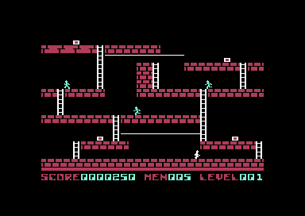
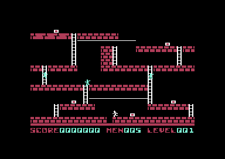

<meta charset="utf-8"><meta name="viewport" content="width=device-width, initial-scale=1"><title>Lode Runner</title>
<link rel="stylesheet" href="https://fonts.googleapis.com/css2?family=Lato:wght@400;700;900&amp;family=IBM+Plex+Mono:wght@400;500&amp;display=swap">
<style>

:root{
  --bg:#23262d; --paper:#e9e7e1; --surface:#ffffff; --surface-2:#f1efea; --line:#d5d3cc; --line-soft:#e0ded8;
  --ink:#2f3136; --ink-soft:#55585f; --ink-mute:#80838a;
  --link:#1f5fa8; --link-hover:#154480; --accent:#1f5fa8;
  --amber:#c25a00; --cyan:#1f5fa8; --coral:#d04a3a; --green:#2a8a4a; --violet:#4a5bd6; --hl:#fff0c2;
  --chip:#2f3136; --chip-ink:#ffffff;
  --c64blue:#40318d; --c64grey:#686868;
  --fd:'Lato',system-ui,sans-serif; --fb:'Lato',system-ui,sans-serif; --fm:'IBM Plex Mono',ui-monospace,Menlo,monospace;
  --col:1080px; --gx:68px; --fs:17px; --lh:1.6; --hw:900; --h1:46px; --h2:26px; --sy:48px; --pp:26px; --r:10px;
  --plate-shadow:0 1px 2px rgba(0,0,0,.05),0 4px 14px rgba(0,0,0,.05);
}
*{box-sizing:border-box}
html{background:var(--bg);min-height:100%}
body{background:var(--paper);color:var(--ink);font-family:var(--fb);font-size:var(--fs);line-height:var(--lh);max-width:var(--col);margin:0 auto;min-height:100vh;padding:0 0 4rem}
h1,h2,h3{font-weight:var(--hw);letter-spacing:-.01em;text-wrap:balance;color:var(--ink);margin:0}
.wrap{padding:0 var(--gx)}
.hero{padding:48px var(--gx) 8px;text-align:left}
.eyebrow{font-family:var(--fm);font-size:12px;letter-spacing:.08em;text-transform:uppercase;color:var(--ink-mute);margin:0 0 10px}
.hero h1{font-size:var(--h1);line-height:1.15;letter-spacing:-.02em;margin:0 0 14px}
.hero .sub{margin:0 0 .6em;color:var(--ink-soft)}
section{padding:var(--sy) 0 24px}
section:last-of-type{border-bottom:none}
.fig{font-family:var(--fm);font-size:12px;letter-spacing:.08em;text-transform:uppercase;color:var(--ink-mute);margin:0 0 10px}
h3{margin:28px 0 12px;font-size:20px}h2.t{font-size:var(--h2);margin-bottom:12px}
.lede{color:var(--ink-soft);margin:0 0 30px}
.plate{background:var(--surface);border:1px solid var(--line);border-radius:var(--r);padding:var(--pp);box-shadow:var(--plate-shadow)}
.cap{font-size:14px;color:var(--ink-mute);margin-top:14px;line-height:1.55}
.cap b{color:var(--ink);font-weight:700}
code{font-family:var(--fm);font-size:.82em;background:var(--chip);color:var(--chip-ink);border-radius:4px;padding:2px 6px;white-space:nowrap}


a{color:var(--link)}
.lr-edition-table{width:100%;border-collapse:collapse;font-size:15px}
.lr-edition-table th,.lr-edition-table td{text-align:left;border-bottom:1px solid var(--line-soft);padding:8px 10px}
@media(max-width:700px){:root{--gx:20px;--h1:36px;--sy:32px;--pp:16px}.lr-edition-table{font-size:13px}.lr-edition-table th,.lr-edition-table td{padding:6px}}

.lr-edition-shots{display:grid;grid-template-columns:1fr 1fr;gap:20px}
.lr-edition-shots figure{margin:0}
.lr-edition-shots img{display:block;width:100%;height:auto;image-rendering:pixelated;background:black}
.lr-edition-shots figcaption{font-size:14px;color:var(--ink-soft);margin-top:10px}
.lr-edition-table th[scope=row]{font-weight:700}
.lr-edition-table a{display:inline-block;padding:4px 0}
@media(max-width:700px){.lr-edition-shots{grid-template-columns:1fr}}
</style>
<!-- tabs -->
<header class="hero"><p class="eyebrow">Commodore 64 · 1983 · Brøderbund</p><h1>Lode Runner</h1><p class="sub">The disk has 150 rooms. The cartridge selects 17 of them and runs its own engine.</p></header>
<main class="wrap" data-part="engine">
<section id="overview"><p class="fig">01 · Disk and cartridge</p><h2 class="t">Two engines, shared rooms</h2>
<p>The supplied CRT is labelled “Official Cartridge Image” and contains a 16 KB cartridge engine. Its room data, graphics, and sound directory differ from the disk program. The How it works and Source tabs cover the Black Label resident disk engine and its 150 room loads; this page collects the checked cartridge comparisons.</p>
<div class="plate"><div class="lr-edition-shots"><figure><figcaption>Black Label disk · room one</figcaption></figure><figure><figcaption>Official Cartridge Image · room one</figcaption></figure></div><p class="cap">Room one is shared by both engines. These native play captures were taken at different moments.</p></div>
</section>
<section id="differences"><p class="fig">02 · Differences</p><h2 class="t">What changes between editions</h2>
<div class="plate"><table class="lr-edition-table"><thead><tr><th scope="col">Property</th><th scope="col">Black Label disk</th><th scope="col">Supplied cartridge</th></tr></thead><tbody>
<tr><th scope="row">Stored rooms</th><td>150 disk sectors</td><td>17 resident boards</td></tr>
<tr><th scope="row">Room loading</th><td>A separate sector read for each board; the engine stays resident</td><td>All 17 boards reside with the cartridge engine</td></tr>
<tr><th scope="row">Room encoding</th><td>Two cells per byte; 224 cell bytes per room</td><td>Runs of 1–16 cells; 2,612 bytes total</td></tr>
<tr><th scope="row">Source glyphs</th><td>104</td><td>76, expanded into RAM</td></tr>
<tr><th scope="row">Completion motifs</th><td>10</td><td>7</td></tr>
<tr><th scope="row">Timer interrupts per undelayed main-loop pass</th><td>2</td><td>3</td></tr>
<tr><th scope="row">Main-loop passes measured over 120 PAL frames</th><td>72</td><td>48</td></tr>
<tr><th scope="row">Approximate default main-loop pace</th><td>30 passes/second</td><td>20 passes/second</td></tr>
</tbody></table><p class="cap">Both timing captures counted 144 interrupts over those 120 PAL frames. The rates describe the tested PAL setup's undelayed loops; pauses and other work can extend an update.</p></div>
<p>The cartridge’s default main loop waits for three timer interrupts per pass, while the disk waits for two. This accounts for the slower cartridge pace in the timing captures.</p>
<p>The <a href="index.html#atlas">picture gallery</a> shows each edition’s graphics, using the gameplay sprite masks for actors. Each edition has its own source indexes. The <a href="music.html#editions">Music tab</a> explains the different motif cycles and their shared pitch-offset range.</p>
</section>
<section id="room-order"><p class="fig">03 · Room order</p><h2 class="t">The cartridge’s 17 rooms</h2>
<p>Every cartridge board matches exactly one of the disk’s 150 boards. The cartridge’s third board is disk room 111, so the sequence jumps across the disk set. Each number below opens that room in Maps / levels.</p>
<div class="plate"><table class="lr-edition-table"><thead><tr><th scope="col">Cartridge room</th><th scope="col">Matching disk room</th></tr></thead><tbody>
<tr><th scope="row"><a href="levels.html?edition=cartridge&amp;room=1#rooms">1</a></th><td><a href="levels.html?edition=disk&amp;room=1#rooms">1</a></td></tr>
<tr><th scope="row"><a href="levels.html?edition=cartridge&amp;room=2#rooms">2</a></th><td><a href="levels.html?edition=disk&amp;room=5#rooms">5</a></td></tr>
<tr><th scope="row"><a href="levels.html?edition=cartridge&amp;room=3#rooms">3</a></th><td><a href="levels.html?edition=disk&amp;room=111#rooms">111</a></td></tr>
<tr><th scope="row"><a href="levels.html?edition=cartridge&amp;room=4#rooms">4</a></th><td><a href="levels.html?edition=disk&amp;room=46#rooms">46</a></td></tr>
<tr><th scope="row"><a href="levels.html?edition=cartridge&amp;room=5#rooms">5</a></th><td><a href="levels.html?edition=disk&amp;room=50#rooms">50</a></td></tr>
<tr><th scope="row"><a href="levels.html?edition=cartridge&amp;room=6#rooms">6</a></th><td><a href="levels.html?edition=disk&amp;room=11#rooms">11</a></td></tr>
<tr><th scope="row"><a href="levels.html?edition=cartridge&amp;room=7#rooms">7</a></th><td><a href="levels.html?edition=disk&amp;room=4#rooms">4</a></td></tr>
<tr><th scope="row"><a href="levels.html?edition=cartridge&amp;room=8#rooms">8</a></th><td><a href="levels.html?edition=disk&amp;room=12#rooms">12</a></td></tr>
<tr><th scope="row"><a href="levels.html?edition=cartridge&amp;room=9#rooms">9</a></th><td><a href="levels.html?edition=disk&amp;room=100#rooms">100</a></td></tr>
<tr><th scope="row"><a href="levels.html?edition=cartridge&amp;room=10#rooms">10</a></th><td><a href="levels.html?edition=disk&amp;room=33#rooms">33</a></td></tr>
<tr><th scope="row"><a href="levels.html?edition=cartridge&amp;room=11#rooms">11</a></th><td><a href="levels.html?edition=disk&amp;room=48#rooms">48</a></td></tr>
<tr><th scope="row"><a href="levels.html?edition=cartridge&amp;room=12#rooms">12</a></th><td><a href="levels.html?edition=disk&amp;room=84#rooms">84</a></td></tr>
<tr><th scope="row"><a href="levels.html?edition=cartridge&amp;room=13#rooms">13</a></th><td><a href="levels.html?edition=disk&amp;room=14#rooms">14</a></td></tr>
<tr><th scope="row"><a href="levels.html?edition=cartridge&amp;room=14#rooms">14</a></th><td><a href="levels.html?edition=disk&amp;room=64#rooms">64</a></td></tr>
<tr><th scope="row"><a href="levels.html?edition=cartridge&amp;room=15#rooms">15</a></th><td><a href="levels.html?edition=disk&amp;room=6#rooms">6</a></td></tr>
<tr><th scope="row"><a href="levels.html?edition=cartridge&amp;room=16#rooms">16</a></th><td><a href="levels.html?edition=disk&amp;room=134#rooms">134</a></td></tr>
<tr><th scope="row"><a href="levels.html?edition=cartridge&amp;room=17#rooms">17</a></th><td><a href="levels.html?edition=disk&amp;room=150#rooms">150</a></td></tr>
</tbody></table><p class="cap">All 17 original cartridge expansions match the disk cell data. The map browser uses disk artwork for both editions.</p></div>
<p>Cartridge rooms are stored as runs of repeated cells. A descriptor puts the tile ID in its low nibble and the run length minus one in its high nibble. Each board expands to the same 448 cells used on disk.</p>
<p>On disk, the reader skips raw sector byte zero, then loads the 224 packed cell bytes from offsets 1–224. Each byte supplies two cells, with the low nibble read first. <code>$71F5</code>, <code>$6FA6</code>.</p>
</section>
<section id="shared"><p class="fig">04 · Shared mechanics</p><h2 class="t">Rules that agree</h2>
<p>Both engines give the same guard route costs for every legal row and column combination. Their score arithmetic also agrees, including overflow and the eighth digit that stays in the counter while the display shows seven. <code>$81CE</code>, <code>$87E6</code>.</p>
<p>Centered tile tests agree for every persistent tile type in five approaches. The runner falls through a trapdoor from above. Sideways and upward entry are blocked.</p>
<p>Those checks cover selected routines. The complete cartridge controls, editor workflow, and persistence behavior remain outside this comparison.</p>
</section>
<section id="disks"><p class="fig">05 · Supplied disks</p><h2 class="t">Black, Gray, and Yellow Label copies</h2>
<p>All three supplied disk images contain identical room sectors for the 150 boards. Their engine payloads differ, and the score-sector data also differs.</p>
<div class="plate"><table class="lr-edition-table"><thead><tr><th scope="col">Supplied image</th><th scope="col">IT engine bytes differing from Black Label</th></tr></thead><tbody><tr><th scope="row">Black Label</th><td>Reference image</td></tr><tr><th scope="row">Gray Label</th><td>10</td></tr><tr><th scope="row">Yellow Label</th><td>275</td></tr></tbody></table></div>
<p>The Gray changes include startup selection and disk-probe values. Yellow also changes startup and has additional loader/protection files. Both copies boot natively; their attract screens show the same opening boards. The Source tab follows the Black Label engine, with loader internals and external disk protection outside its scope.</p>
</section>
<section id="evidence"><p class="fig">06 · Evidence</p><h2 class="t">Where the comparisons come from</h2>
<p>The <a href="source-engine.html">Source tab’s technical reference</a> records the original-code checks and live timing captures. Cartridge addresses belong to a separate program and are recorded there; addresses linked into this site’s Source tab refer to the disk engine.</p>
<p>The supplied cartridge payload matches the one in <a href="https://github.com/jankfoundry/loderunner">the separate cartridge disassembly</a>. Reassembling that source reproduced every payload byte. The cartridge comparison here checks selected behavior from that engine; the complete disk listing has its own coverage record.</p>
</section>
</main>
<footer class="wrap cap"><a href="https://github.com/gamesexplained/gamesexplained">Games Explained</a> · <a href="https://creativecommons.org/licenses/by-sa/4.0/">CC BY-SA 4.0</a> · <a href="https://opensource.org/licenses/MIT">Code: MIT</a></footer>
